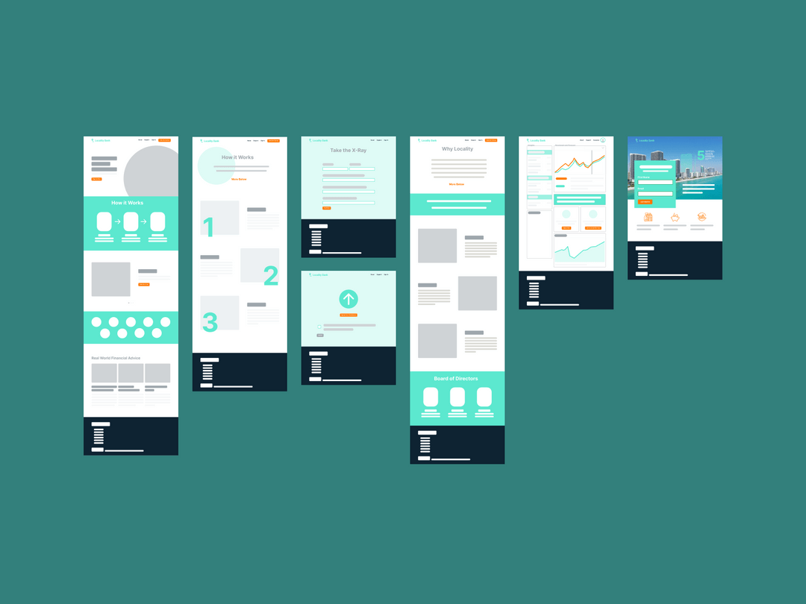

Locality
Bank serving small business owners of South Florida
UI/UX Design, Art Direction, Product Design
UI/UX Design, Art Direction, Product Design
Designed and launched multiple phases of Locality's marketing website, ensuring an accesible and responsive site focused on South Florida users and their banking needs.

Strategised playful marketing campaigns around the shape of the logomark and secondary brand colors, focusing on the vibrant and lively South Florida, encouraging customers to Bank like a Local.
Wireframed, Iterated, and Prototyped the marketing site through multiple phases of launch, including adding an interactive map of businesses that bank with Locality.
Jey Austen, a Senior Mobile Product Designer at With App, was responsible for leading the design of a new feature, a GIF drawer that also included a camera with sticker cutouts and a photo drawer. Jey's role was to oversee the entire design process, ensuring that the final product met the needs of the target audience, and help With App build and implement their design system, adding new components to the library in Figma.
We wanted to meet the banking needs of South Florida businesses on a local level. We focused on using bright colors and imagery that features the types of SMBs most common in the South Florida area - construction, wholesalers, etc.

Art Direction from a launch campaign that employed the bright colors and shapes from Miami architecture
Client: Create a product where SMB owners can upload their tax documents and learn which loans they qualify for
CMO: Create a marketing website that will drive users to bank with Locality and download the app
VP: Does it look sleek and modern while also staying up to accessibility standards?
Developer: How will it function? Will the marketing site be where the tax documents are uploaded or the product itself?
Content Strategist: How can we use the message of "bank like a local" and the South Florida area to compel small business owners to sign up?
Junior Designers: Do the social graphics, swag, and other collateral maintain consistent vision and voice?
From our research, we found that most SMB owners in the South Florida area were wholesalers, construction contractors, doctors, and lawyers.
The Marketing team built out an 100-page playbook filled with research on the South Florida area. We built focus groups and establisheed marketing personas around the types of locality customers to anticipate their needs as they interracted with the site.
From our research and marketing personas, we came up with an MVP for site launch, then a phase 2 and 3 for future launches. We created a flowchart of pages and their content, then I got to work wireframing. I quickly sketched out a rough outline after our meeting, then built low fidelity and high fidelity wireframes in figma to better understand the flow and functionality.
Here is a sample of a mid-fidelity wireframe of an early draft of the locality site. The dashboard with insights was taken out of the MVP launch, and the scope of the project changed as time went on. We chose to focus on sign ups in the beginning and deliver more robust functionality at a later date.
We wanted to create an experience that made users proud to call South Florida home. Often in web design, your first idea isn't always your best. I knew from the wireframes what the functionality of the homepage needed to be, but I needed to settle on a look and feel for the site that would be inviting, accessible, and drove home the brand vison of "bank like a local." I selected stock imagery of business owners that were cheerful, excited, and dressed in lightweight clothing that fit the climate of Miami and Fort Lauderdale. I also placed a vector silhouette of South Florida behind the feature list, so users would be reminded of the unique advantages of banking with Locality.
Every page on the locality site had multiple iterations. As time went on, more features were added to the app by the product team, so we updated the site to reflect the new direction. Once Locality launched, we wanted to create a feature that would bring Locality businesses together in a professional network. To do this, we created a windoe cling with a QR code for businesses to advertise their connection to locality, and the QR code led to a locality community directory. I researched various business map tools, and iterated on the design, focusing on keeping it simple, clean, and functional.

The Locality site launched in several phases over the course of 6 months. As I built the site in figma, I created a marketing design system so that the site could scale. The team and focuses changed during the build, so it was important to keep moving, think on my feet, and collaborate with the content designer regularly in figma group sessions. The Locality team was wonderful to work with, and I grew as a designer and learned a ton during this process.

Marketing Design System - colors, buttons, typography, and toolbars

Product Design, Interaction Design, Design Systems

A groupchat app meant to bring far apart friends closer together
UX/UI Design, Art Direction, Product Design

Joint banking for couples combining their finances for the first time
UI/UX Design, Art Direction, Product Design

Bank serving small business owners of South Florida
Brand Design and Art Direction
An inclusive space for people in creative tech to share their life + work
Currently seeking remote brand design and art direction opportunities on LGBTQ+ inclustive design teams, as well as clients in creative industries